Os díodos emissores de luz (LED) são muito usados atualmente em aparelhos
eletrónicos. Um LED produz luz de forma muito eficiente, com um consumo
elétrico de apenas alguns miliwatt. São construídos em diferentes
formas, tamanhos e cores. Cada algarismo num écran numérico é obtido com
um conjunto de 8 LED; para obter cada um dos números acendem-se as
combinações de LED necessárias.
Um LED é construído com cristais semicondutores e tem um tempo de
duração muito elevado. A luz que produz tem uma cor própria que não
muda com a corrente ou as condições de operação.
12.1. Equações de Maxwell
As equações básicas que permitem calcular o campo eletromagnético são
conhecidas como equações de Maxwelll. Uma
forma suficiente de definir os dois campos, elétrico e magnético, em
qualquer ponto do espaço, consiste em descrever o fluxo desses campos em
qualquer superfície fechada e o integral de linha em qualquer curva
fechada. São necessárias então quatro equações, uma para o fluxo do
campo elétrico,
, outra para o fluxo do cmapo magnético,
, e duas mais para os integrais de linha dos dois campos.
Essas quatro equações já foram introduzidas ao longo dos capítulos
anteriores e vão ser reescritas aqui. A primeira equação de Maxwell é a
lei de Gauss, que relaciona o fluxo do campo elétrico numa superfície
fechada com as cargas no seu interior:
(12.1)
No caso do campo magnético, como não existem monopolos magnéticos, o
fluxo através de qualquer superfície fechada é nulo.
(12.2)
Esta é a segunda equação de Maxwell.
A terceira equação de Maxwell é a equação que define o integral de
linha do campo elétrico em qualquer curva fechada C. Essa equação é a
lei de Faraday, introduzida no capítulo 9.
(12.3)
em que o integral no primeiro membro corresponde à f.e.m. induzida na
curva C fechado. O fluxo magnético no segundo membro da equação é o
fluxo através da superfície delimitada pela curva C.
A quarta equação, que define o integral de linha do campo magnético em
qualquer curva fechada C, é a lei de Ampère, já estudada no capítulo
sobre o campo magnético:
(12.4)
mas Maxwell observou que esta equação só poderia ser válida no caso em
que não existam campos elétricos variáveis.
No capítulo sobre indução eletromagnética viu-se que os campos
elétrico e magnético são diferentes em diferentes referenciais
inerciais, e utilizou-se a invariância da força eletromagnética para
calcular o campo elétrico induzido num referencial em que o campo
magnético não é estático. De igual modo, num referencial em que o campo
elétrico não é estático, deve aparecer um campo magnético induzido.
Na equação 12.4 falta um termo que dependa da variação do
campo elétrico e que corresponda ao integral de linha do campo magnético
induzido.
Considere-se o exemplo de um fio retilíneo sobre o semieixo negativo dos
, que se estende desde
até a origem (figura 12.1).
Se durante alguns instantes existe no fio uma corrente
, no sentido
positivo do eixo dos
, há acumulação de cargas positivas na origem;
se
representa a carga acumulada na origem no instante
, a
derivada dessa função em ordem ao tempo é igual à corrente:
(12.5)
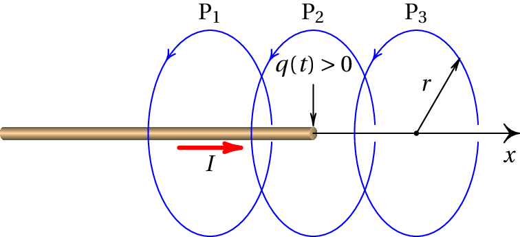
Figura 12.1: Fio retilíneo, no eixo dos
, desde
até a
origem.
Para calcular o módulo do campo magnético em três pontos
,
e
, que se encontram a uma distância
do
eixo dos
, considerem-se 3 circunferências de raio
, perpendiculares
ao eixo dos
, com centro no eixo e orientadas no sentido indicado na
figura 12.1. Aplicando a lei de Ampère a essas 3
circunferências, conclui-se que o módulo do campo magnético no ponto
é
e nos pontos
e
é nulo.
A linha contínua no gráfico 12.2 mostra o módulo do campo
magnético obtido usando a lei de Ampère para todos os pontos a uma
distância
do eixo dos
. Em
(
) existe uma
descontinuidade; o campo passa de
para zero. A curva a
tracejado é o resultado mais realista esperado: o campo decresce
gradualmente até zero.
Para obter a curva a tracejado na figura 12.2 é necessário
incluir no segundo membro da equação 12.4 um termo adicional que
é nulo longe da origem e na vizinhança da origem aproxima-se de
, se
for negativo, ou
, se
for positivo.
A carga
na origem produz fluxo elétrico
negativo através do
interior da circunferência que passa por
e positivo
através do interior da circunferência que passa por
.
Quando os pontos
e
se aproximam de
, o fluxo elétrico nessas duas circunferências é
e
respetivamente. Como tal, a derivada do
fluxo elétrico em ordem ao tempo passa de
para
e o termo que falta no segundo membro da
equação 12.4 é:
(12.6)
Incluindo esse termo na equação 12.4, obtém-se a quarta
equação de Maxwell:
(12.7)
12.2. Campos induzidos
Um campo magnético variável no tempo induz um campo elétrico, e um campo
elétrico variável induz um campo magnético. Um exemplo é o campo
magnético uniforme do problema 6 no capítulo 9; a
variação do campo em função do tempo induz um campo elétrico com
linhas de campo circulares.
O campo elétrico induzido é proporcional à derivada do fluxo magnético
e o campo magnético induzido é proporcional à derivada do fluxo
elétrico. Quando um campo é uniforme, o fluxo através de uma
superfície é maior se a superfície for perpendicular ao campo; isso
implica que o campo induzido é perpendicular ao campo variável.
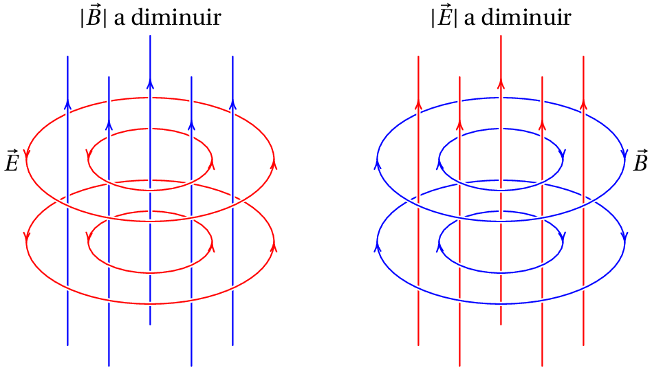
Figura 12.3: Campo elétrico induzido por um campo magnético uniforme de
intensidade variável variável (esquerda) e campo magnético induzido por
um campo elétrico uniforme de intensidade variável (direita).
A figura 12.3 mostra o campo elétrico induzido por um campo
magnético uniforme mas variável, e o campo magnético induzido por um
campo elétrico uniforme e variável. No primeiro caso, devido ao sinal
negativo no lado direito da equação 12.3, o campo elétrico
induzido tem sentido oposto ao obtido com a regra da mão
direita em
relação à derivada do campo magnético; como o campo magnético está a
diminuir, a derivada do campo aponta para baixo e a regra da mão direita
indica rotação no sentido horário; portanto, as linhas do campo induzido
estão orientadas no sentido anti-horário.
O sinal positivo do último termo na equação 12.7 implica que as
linhas do campo magnético induzido seguem a regra da mão direita em
relação ao aumento do campo elétrico. No caso do campo elétrico
variável no lado direito da figura 12.3, como o campo está a
diminuir, a derivada do campo elétrico aponta para baixo e a regra da mão
direita indica que o campo magnético induzido é no sentido horário.
12.3. Campo eletromagnético no vácuo
No vácuo, não podem haver cargas ou correntes, pois não há matéria,
mas pode haver campos elétricos e magnéticos. Nesse caso, as quatro
equações de Maxwell tomam a forma,
(12.8)
(12.9)
(12.10)
(12.11)
O único parâmetro nessas equações é a constante
. No
sistema internacional de unidades, o valor dessa constante é:
(12.12)
que é exatamente igual ao inverso do quadrado da velocidade da luz no
vácuo,
(12.13)
Maxwell foi o primeiro a descobrir esta relação entre as constantes
elétrica e magnética e a velocidade da luz, a meados do século XIX,
quando o valor da velocidade da luz no vácuo já era conhecido com muita
precisão, mas ninguém suspeitava que existisse qualquer relação entre o
eletromagnetismo e a luz. Maxwell concluiu então que a luz deve ser uma
onda eletromagnética, composta por campos elétrico e magnético que se
podem propagar no vácuo.
Para investigar as soluções das equações 12.8, 12.9,
12.10 e 12.11, admita-se que numa região existem campos
elétrico e magnético que são soluções dessas equações; cada um dos
campos é induzido pela variação do outro. Se os campos forem uniformes
nessa região, já se viu que devem ser perpendiculares entre si. Pode-se
fixar a origem num ponto onde existem campo elétrico e magnético e
escolher os eixo dos
e dos
a apontar nas direções e sentidos do
campo
e
nesse ponto, respetivamente.
Aplique-se a equação 12.11 num percurso retangular infinitesimal
C
, perpendicular ao eixo dos
, com lados
e
e
um vértice na origem, orientado como indica a figura 12.4. O
fluxo elétrico através do interior de C
é:
(12.14)
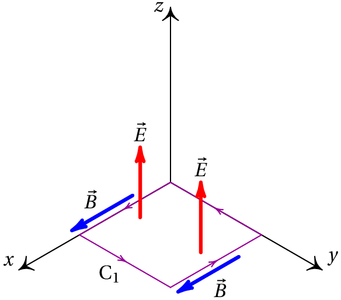
Figura 12.4: Fluxo elétrico e integral de linha do campo magnético num
retângulo no plano O
.
Estando o campo magnético na direção e sentido do eixo dos
, o
integral de linha do campo magnético ao longo de C
é:
Dividindo os dois membros dessa equação por
e
calculando o limite
, obtém-se no primeiro membro a
derivada parcial de
em ordem a
, com sinal negativo:
(12.17)
Em seguida, aplique-se a equação 12.10 num percurso retangular
infinitesimal C
, perpendicular ao eixo dos
, com lados
e
e um vértice na origem, orientado no sentido que mostra a
figura 12.5.
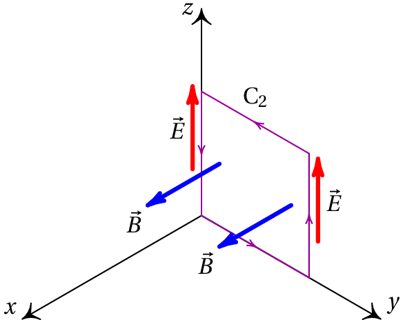
Figura 12.5: Fluxo magnético e integral de linha do campo elétrico num
retângulo no plano O
.
O fluxo magnético através do interior de C
é
,
e o integral de linha do campo elétrico ao longo de C
é
. Substituindo na equação
12.9 obtém-se:
(12.18)
e dividindo ambos os membros por
e calculando o limite
, o primeiro membro fica igual à derivada parcial
de
em função de
:
(12.19)
Derivando a equação 12.17 em ordem a
e a equação
12.19 em ordem a
e combinando as duas equações, pode-se
obter uma equação em que figura unicamente o campo elétrico:
(12.20)
Também se pode obter uma equação apenas para o campo magnético,
derivando a equação 12.17 em ordem a
e a equação
12.19 em ordem a
e combinando os resultados:
(12.21)
As equações 12.20 e 12.21 são a mesma equação,
designada de equação de onda.
12.4. Ondas planas polarizadas
As soluções das equações 12.20 ou 12.21 podem ser
obtidas num outro sistema de coordenadas em que a equação assume uma
forma mais simples. A componente
do campo elétrico, na equação
12.20, é uma função que depende de
e de
. Fazendo uma
mudança para duas variáveis caraterísticas
e
definidas
por:
(12.22)
e usando a regra de derivação de funções compostas, calculam-se as
derivadas parciais de
, em função de
e
, substituindo-as na
equação 12.20 para obter:
(12.23)
É fácil ver que para verificar essa equação, uma das duas derivadas
parciais de
, em ordem a
ou em ordem a
, deve ser nula. Isto é,
o campo
deve ser uma função
que depende apenas de
, ou uma
função
que depende apenas de
. Em função das variáveis
e
, a função
pode ter uma das duas formas:
(12.24)
ou qualquer combinação linear desses dois tipos de funções. Quaisquer
funções
ou
conduzem a soluções particulares da equação de onda.
Para cada valor de
, a função
é idêntica à função
, em
, mas deslocada no sentido negativo do eixo dos
de uma
distância igual a
. Assim sendo, o campo
descreve
uma onda que se propaga no sentido negativo do eixo dos
, com velocidade
. Uma análise semelhante mostra que
descreve uma onda
que se propaga no sentido positivo do eixo dos
, com velocidade
.
O campo magnético
, que também verifica a equação de onda, também
deve ter uma forma semelhante à equação 12.24, mas não pode
ser independente da solução obtida para
, devido às relações
12.17 e 12.19. Substituindo as
soluções 12.24
na equação 12.17, obtém-se as soluções correspondentes para o
campo magnético:
(12.25)
O fator
no denominador indica que a intensidade do campo magnético
numa onda eletromagnética é muito menor que a intensidade do campo
elétrico. Os sinais obtidos nestas expressões para
indicam que os
campos indicados nas figuras 12.4 e 12.5 correspondem a
uma onda que se propaga no sentido positivo do eixo dos
e se a onda se
propaga no sentido negativo do eixo dos
, o campo magnético tem o
sentido oposto ao que foi indicado nas figuras 12.4 e
12.5.
Conclui-se que existem duas famílias de soluções das equações de onda
eletromagnética. A primeira família corresponde a
ondas que se propagam no
sentido positivo do eixo dos
com campos elétrico e magnético dados
pelas seguintes expressões:
(12.26)
em que
pode ser qualquer função contínua de uma variável,
. A
figura 12.6 mostra uma dessas soluções.
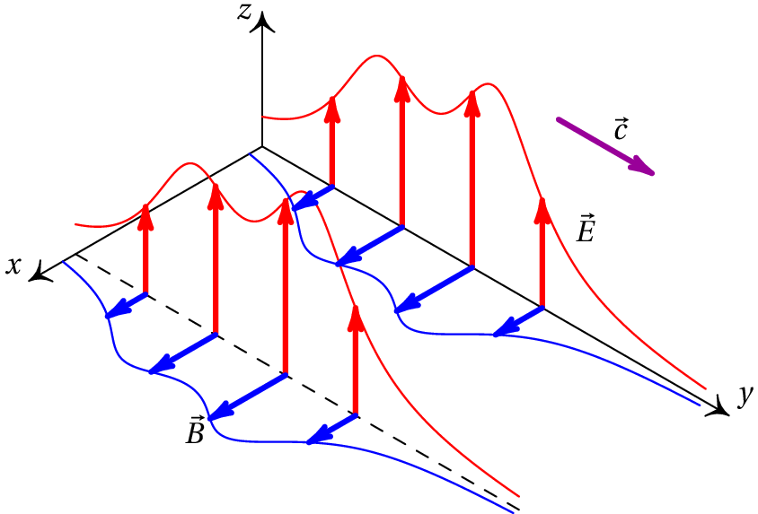
Figura 12.6: Onda eletromagnética plana polarizada, com velocidade no sentido
positivo do eixo dos
.
A segunda família de soluções são ondas eletromagnéticas que se
propagam no sentido negativo do eixo dos
, e com campos que verificam as
expressões:
(12.27)
onde
é qualquer função contínua de uma variável,
.
Estas soluções foram obtidas admitindo que as direções dos campos
elétrico e magnético são iguais em todo o espaço e esse tipo de onda
eletromagnética chama-se onda planapolarizada. Lembre-se que a direção do campo
magnético é necessariamente perpendicular ao campo elétrico. A direção
de propagação da onda é perpendicular à direção do campo elétrico e
à direção do campo magnético e é sempre no sentido do produto vetorial
; nomeadamente, seguindo a
regra da mão direita de
para
.
A direção de polarização é, por definição, a direção do campo
elétrico. O campo magnético da onda é muito mais fraco do que o campo
elétrico. O módulo da velocidade de todas as ondas eletromagnéticas no
vácuo é sempre a constante
.
As ondas planas polarizadas, que se propagam na direção do eixo dos
ou dos
, têm formas semelhantes às equações 12.26 ou
12.27, com
substituído pela coordenada correspondente à
direção de propagação, o versor
substituído pelo versor na
direção de polarização e
substituído pelo versor
perpendicular às direções de propagação e de polarização, seguindo a
regra da mão direita do versor de propagação para o versor de
polarização.
12.5. Ondas harmónicas
Uma onda harmónica é uma onda com a forma de uma função sinusoidal,
como na figura 12.7, no caso de uma onda que se desloca no
sentido positivo do eixo dos
.
A distância
entre dois pontos consecutivos onde o campo e a sua
derivada têm o mesmo valor, é designada por
comprimento de onda (por exemplo, a distância
entre dois máximos ou mínimos consecutivos). O valor máximo do módulo
do campo,
, é a sua amplitude.
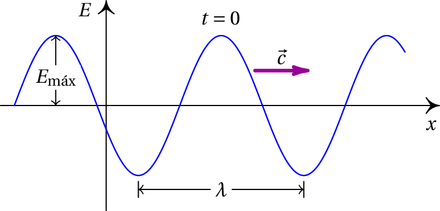
Figura 12.7: Onda harmónica.
O tempo que a onda demora a percorrer um comprimento de onda designa-se por
período,
. O inverso do período é a
frequência
, que indica o
número de comprimentos de onda que passam por um ponto, por unidade de
tempo. No sistema SI a unidade da frequência é o
hertz,
.
No caso de uma onda eletromagnética no vácuo, a velocidade de
propagação é
e observa-se a relação:
(12.28)
A equação da função representada na figura 12.7 é:
(12.29)
onde a constante
é a fase inicial.
Essa função representa a forma da onda num instante inicial, que se pode
tomar como
. Para obter a função de onda num instante diferente,
substitui-se
por
, já que a onda se propaga no sentido
positivo do eixo dos
, com velocidade
(12.30)
e usando a relação entre a velocidade e o período, pode-se escrever
(12.31)
Para
, obtém-se a equação que descreve o campo elétrico na origem,
em função do tempo:
(12.32)
e vê-se que o campo elétrico na origem é uma função sinusoidal com
período
e amplitude
. O campo noutros pontos tem
exatamente a mesma forma sinusoidal, mas com diferentes valores da
constante de fase.
Exemplo 12.1
Uma onda eletromagnética plana propaga-se no vácuo, no sentido negativo
do eixo dos
. Num dado instante
o campo elétrico é
, onde
é medido em metros e o
campo é medido em N/C. Escreva a função que define o campo magnético em
qualquer ponto e em qualquer instante.
Resolução. A função que define o campo elétrico em
= 0
indica que se trata de uma onda harmónica polarizada na direção do
versor
. O campo elétrico de uma onda harmónica plana,
polarizada segundo
, que se propaga no sentido negativo do
eixo
, é:
Substituindo
= 0 e comparando com o campo dado no enunciado, conclui-se
que:
e
deve ser igual à velocidade da luz no vácuo que em unidades
SI é 3×108. Assim,
= 9.75×1016 e o
campo elétrico em qualquer ponto e em qualquer instante é:
O módulo do campo
é igual ao módulo do campo elétrico,
dividido pela velocidade da luz; o sentido de
deve garantir que o
produto vetorial
seja na direção de propagação
(
) e portanto:
12.6. Espetro eletromagnético
O comprimento de onda,
, e a frequência,
, de uma onda
harmónica não podem variar independentemente, pois estão relacionados
por
. Dada a frequência ou o comprimento de onda, é
possível classificar a onda dentro do espetro eletromagnético e
determinar as suas propriedades. O valor máximo dos campos determina a
intensidade, mas não a classificação no espetro.
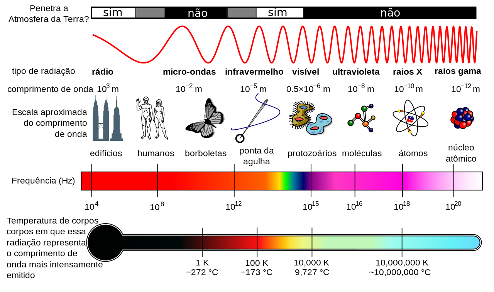
Figura 12.8: Espetro eletromagnético.
Em princípio, podem existir ondas eletromagnéticas com qualquer valor de
entre 0 e ∞. Alguns exemplos de ondas eletromagnéticas
são as ondas de rádio e de comunicações móveis, as ondas usadas num
forno de microondas para aquecer os alimentos e a luz visível. O que
distingue entre essas ondas é a frequência respetiva, ou de forma
equivalente, o comprimento de onda. A figura 12.8 mostra o
espetro eletromagnético identificando algumas das ondas comuns.
Usualmente, a radiação eletromagnética produzida por um sistema não tem
uma frequência única
, como no caso das ondas harmónicas, mas é uma
sobreposição de ondas harmónicas com uma distribuição de frequências.
Por exemplo, a luz solar tem um espetro contínuo de
frequências na banda visível; a mistura das várias cores faz parecer a
luz branca mas fazendo passar essa luz através de um prisma
(figura 12.9), consegue-se ver o espetro das várias cores
(diferentes frequências).
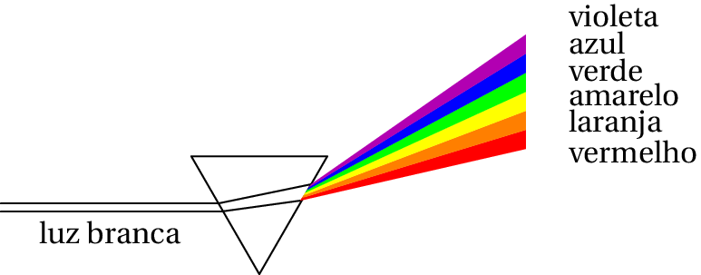
Figura 12.9: Dispersão da luz num prisma.
Dentro de um meio diferente do vácuo, a constante de Coulomb
na
equação 12.13 deve ser dividida pela constante dielétrica
do meio. Isso conduz a uma velocidade da luz menor do que no vácuo. A
constante dielétrica é maior quanto maior a frequência; como tal, a cor
que se propaga mais lentamente no prisma (violeta) sofre um maior desvio,
como mostra a figura 12.9. O arco-íris é outra manifestação
desse mesmo fenômeno (dispersão da
luz). A luz do Sol atravessa gotas de água nas nuvens e é refletida, como
se mostra na figura 12.10; se não houvesse dispersão, veríamos
um ponto de luz intensa, refletida, na direção oposta a onde está o Sol.
A dispersão da luz dentro das gotas de água faz com que esse ponto de luz
refletida se torne num anel, com um ângulo de aproximadamente 42°,
à volta desse ponto. Como a dispersão das diferentes cores é diferente,
em vez de um anel são criados vários anéis. A cor que sofre maior
dispersão (violeta) acaba por ficar no anel mais próximo do centro,
porque a reflexão na superfície interna da gota inverte a ordem das
cores.
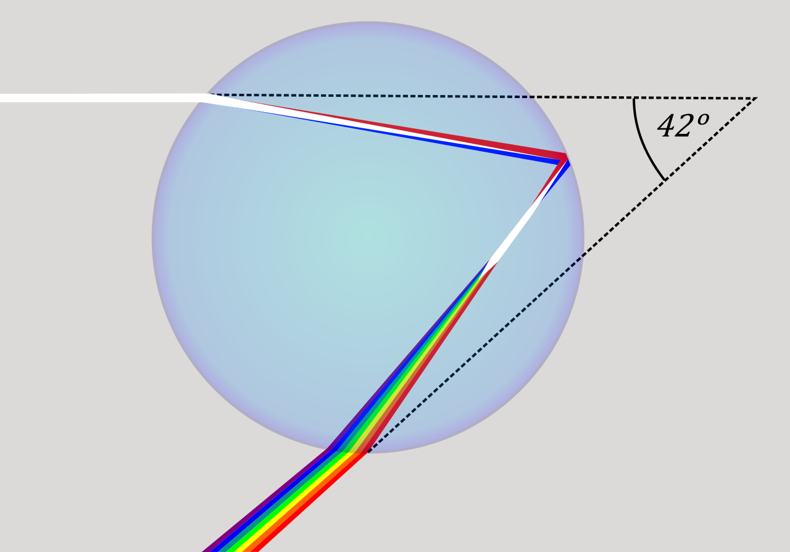
Figura 12.10: Dispersão e reflexão da luz numa gota de água.
12.7. Teoria ondulatória da luz
Existem vários fenómenos que corroboram que a luz é uma onda; por
exemplo, a interferência, difração e
polarização. Alguns cristais têm a propriedade de polarizar a luz: só deixam passar uma parte da luz
incidente. Colocando um segundo filtro polarizador a seguir ao primeiro e
rodando um dos filtros, existe uma posição para a qual não passa nenhuma
luz (figura 12.11).
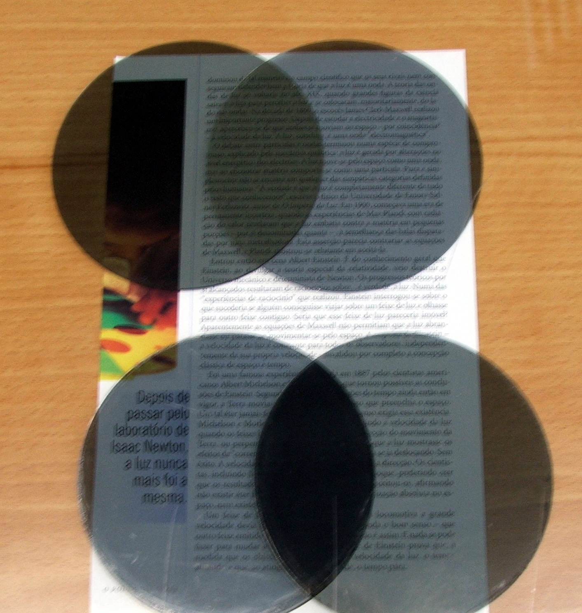
Figura 12.11: Dois filtros polarizadores com os eixos paralelos (acima) e com os
eixos perpendiculares (abaixo).
Observando com um filtro polarizador a luz refletida numa superfície e
rodando o filtro, existe uma posição em que não se consegue ver a luz
refletida.
Normalmente a luz é uma sobreposição de ondas com campos que oscilam em
diferentes direções. Num filtro polarizador as moléculas estão
orientadas numa direção determinada, o eixo do polarizador, e só deixam
passar a luz polarizada nessa direção (direção do campo elétrico).
A luz refletida numa superfície é polarizada na direção tangente à
superfície. Um filtro polarizador com o seu eixo perpendicular a essa
superfície não deixa passar nenhuma luz. Uma forma de saber se as lentes
nuns óculos de sol estão polarizadas ou não, consiste em olhar para um
reflexo e rodar a lente; se estiver polarizada, deverá existir um ângulo
em que os reflexos desaparecem.
Os cristais líquidos têm a propriedade de orientar as suas moléculas
numa direção, quando são atravessados pela corrente elétrica,
tornando-se polarizadores. Esse é o princípio usado nos ecrãs
LCD(Liquid Crystal Display)
de calculadoras, telemóveis e televisores. A luz que sai do
ecrã é polarizada com um filtro polarizador e a seguir, passa por pontos
onde existem vários cristais líquidos, com correntes elétricas
consegue-se controlar os pontos onde os cristais são polarizados
perpendicularmente ao primeiro polarizador, impedindo a luz de passar.
12.8. Teoria corpuscular da luz
Antes de Maxwell ter proposto que a luz é uma onda eletromagnética, na
década de 1860, havia um debate agitado na comunidade científica, entre
os que defendiam a teoria corpuscular proposta e os que defendiam a teoria
ondulatória da luz. Newton no século XVII,
acreditava na teoria corpuscular e o seu contemporâneo Huygens
(1629–1695) defendia a teoria ondulatória.
A figura 12.12 mostra um raio de luz que sai de uma fonte de luz
e incide na superfície de um semicírculo de vidro. O ângulo que o raio
incidente faz com a perpendicular à superfície do vidro é de 60°;
o raio incidente separa-se num raio refletido que também faz um ângulo
de 60° com a perpendicular à superfície e um raio refratado que
entra no vidro e faz um ângulo de 35° com a perpendicular.
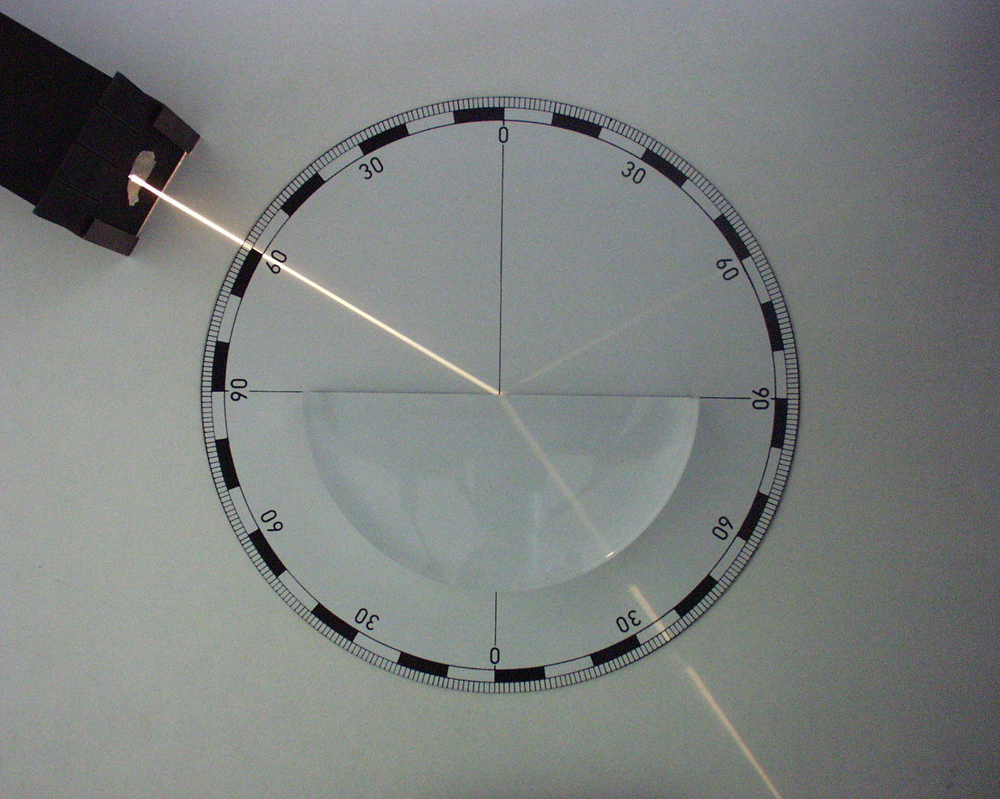
Figura 12.12: Raios de luz incidente (esquerda acima), refletido (direita acima)
e refratado (abaixo) num semicírculo de vidro.
Segundo a teoria corpuscular, a luz é formada por pequenas partículas que
saem da fonte e se deslocam em linha reta. Assim explica-se facilmente a
existência de raios de luz, que se deslocam em linha reta. A teoria
corpuscular explica com sucesso a igualdade dos ângulos dos raios
incidente e refletido com a perpendicular à superfície porque é o mesmo
que acontece quando são disparadas partículas contra uma superfície
rígida. Consegue também explicar a diferença entre os ângulos dos raios
incidentes e refratado com a perpendicular, admitindo que os corpúsculos
de luz se deslocam com velocidade diferente no ar e no vidro.
A teoria ondulatória da luz também consegue explicar a criação de feixes
de luz, embora o argumento não seja tão intuitivo como no caso da
teoria corpuscular. As ondas também verificam as leis da reflexão e da
refração, mas no caso da refração há uma diferença importante entre
as previsões das duas teorias. Quando a luz passa do ar para o vidro, como
na figura 12.12, o ângulo do raio refratado com a perpendicular
é menor que o ângulo entre o raio incidente e a normal. Segundo a teoria
corpuscular, isso implica velocidade da luz maior no vidro do que no ar,
enquanto que na teoria ondulatória implica velocidade das ondas de luz
menor no vidro do que no ar.
Na época de Newton e Huygens não era fácil medir a diferença da
velocidade da luz no vidro e no ar e o prestígio de Newton fez com que
fosse dada maior credibilidade à teoria corpuscular do que à teoria
ondulatória. Hoje em dia sabe-se que a velocidade da luz no vidro é de
facto menor do que no ar, como prevê a teoria ondulatória. A teoria
eletromagnética de Maxwell acabou com o debate, ficando estabelecido, sem
lugar a dúvida, que a luz é uma onda eletromagnética.
No entanto, no fim do século XIX foi descoberto o efeito
fotoelétrico, que não pode ser explicado com a
teoria ondulatória. Einstein explicou esse efeito em 1905, através da
teoria dos fotões: a luz é formada por partículas designadas de
fotões. Cada fotão
transporta uma energia igual a:
(12.33)
em que
é a frequência da luz associada ao fotão e
é a constante
de Planck:
(12.34)
Ou seja, a energia de uma onda eletromagnética não pode ter um valor
qualquer, mas apenas múltiplos inteiros do quantum de energia
, já que o número de fotões tem de ser um número inteiro.
Numa onda clássica, a energia pode ser absorvida de forma contínua;
nomeadamente, a onda pode transferir qualquer parte da sua energia a um
sistema. No caso de uma onda quântica, como as ondas eletromagnéticas, a
transferência de energia a um sistema só pode ser feita por absorção de
alguns fotões; a energia transferida é a soma das energias desses fotões
e, portanto, deve ser um múltiplo inteiro do quantum de energia
.
Hoje em dia acredita-se que os fotões ou qualquer outra partícula têm
também uma natureza ondulatória. A energia de um fotão e das outras
partículas é produzida ou absorvida em quantidades discretas, mas é
transportada de um ponto para outro na forma de uma onda. Todas as formas
de matéria e energia apresentam propriedades de onda e de partícula. Esse
fenómeno, designado de dualidade onda-partícula, é a base da
física quântica.
12.9. Díodos emissores de luz (LED)
Os díodos emissores de luz (LED) são dispositivos com
um cátodo e um ânodo, identificados como mostra a figura 12.13.
Ligando uma diferença de potencial superior a um valor mínimo, com o
ânodo a maior potencial que o cátodo, o
LED produz luz
monocromática. A imagem de abertura deste capítulo mostra vários tipos
de LED. Quando o potencial do ânodo for menor que o potencial do cátodo,
o LED não deixa passar corrente e não acende.
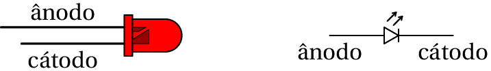
Figura 12.13: LED e diagrama de circuito correspondente. O cátodo costuma ser
um fio mais curto e estar perto de uma zona onde a cobertura plástica é
plana.
A energia elétrica que os portadores de carga perdem na passagem da
interface entre os dois semicondutores é transformada em luz. Essa energia
corresponde à diferença entre dois níveis de energia no semicondutor e
tem um valor específico próprio dos semicondutores usados no LED.
Como se viu, a energia que transporta cada fotão é dada pela
equação 12.33 como tal, os fotões emitidos no LED têm todos
aproximadamente a mesma frequência, igual à diferença entre os níveis
de energia dos eletrões nos dois elétrodos do LED, dividida pela
constante de Planck; isso implica que a luz do LED é monocromática. Assim,
a cor da luz emitida pelo LED depende do semicondutor usado. A
tabela 12.1 mostra as cores próprias de alguns semicondutores.
Tabela 12.1: Cores associadas a alguns semicondutores usados atualmente.
Semicondutor
Cor da luz
Arsenieto de gálio e alumínio
Infravermelha
880 nm
Arsenieto de gálio e alumínio
Vermelha
645 nm
Fosfato de alumínio, índio e gálio
Amarela
595 nm
Fosfato de gálio
Verde
565 nm
Nitreto de gálio
Azul
430 nm
Quando circula corrente pelo LED, cada carga de condução que atravessa a
interface no LED perde a energia correspondente à de um fotão. Assim, a
curva caraterística do LED é semelhante à caraterística de um recetor,
com ordenada na origem positiva, e declive constante positivo
(figura 12.14).
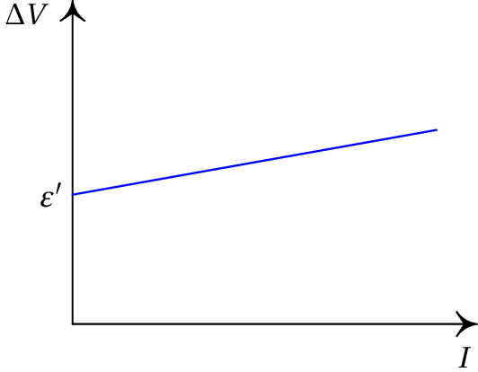
Figura 12.14: Caraterística tensão-corrente de um LED.
A força contra-eletromotriz do LED,
(ordenada na origem da
caraterística tensão-corrente), é a energia por unidade de carga, que as
cargas de condução perdem na passagem pelo LED e é convertida em luz.
Assim, a energia que cada eletrão perde quando atravessa a interface entre
os dois semicondutores é igual a:
. Essa energia é a
energia do fotão que é emitido:
(12.35)
onde
é a velocidade da luz e
é o comprimento de onda da luz
emitida.
Esta equação é útil para medir experimentalmente o valor da constante
de Planck, a partir da caraterística tensão-corrente de um LED usando a
montagem experimental apresentada na figura 12.15, por exemplo.
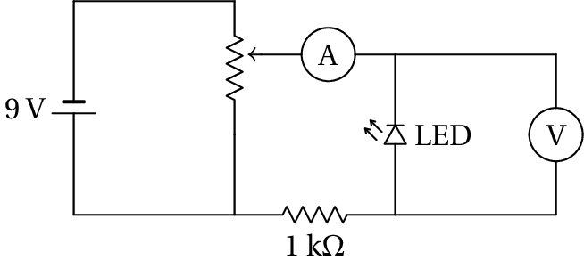
Figura 12.15: Circuito usado para determinar a caraterística de um
LED.
A resistência de 1 kΩ é usada para evitar que a corrente no LED
ultrapasse alguns miliampere e não queime o LED; se o LED estiver ligado
no sentido correto, deve produzir luz. Com os valores medidos da diferença
de potencial em função da corrente traça-se a curva caraterística do
LED, que pode ser ajustada por uma reta. A ordenada na origem dessa reta
(
) e o valor do comprimento de onda próprio do LED
(tabela 12.1) permitem obter o valor da constante de Planck a
partir da equação 12.36.
Perguntas
(Para conferir a sua resposta, clique nela.)
Qual das afirmações é verdadeira para uma onda eletromagnética no
vácuo? Quanto menor for o período:
Menor é o comprimento de onda.
Maior é a velocidade.
Menor é a amplitude.
Maior é a amplitude.
Nenhuma das outras respostas.
Qual dos seguintes fenómenos é uma prova a favor da teoria
ondulatória da luz, contra a teoria corpuscular?
Refração da luz.
Efeito fotoelétrico.
Reflexão da luz.
Polarização da luz.
O arco iris.
Uma onda eletromagnética harmónica tem frequência de 2.0 GHz.
Calcule o comprimento de onda.
30 m
15 cm
6.67 m
150 m
3.0 m
Que tipo de radiação é uma onda eletromagnética com comprimento
de onda de 1 cm?
Luz visível.
Raios gama.
Onda de rádio.
Microonda.
Raios X.
Uma onda eletromagnética propaga-se no sentido positivo do eixo dos
. Num certo ponto e num certo instante, o campo elétrico da onda aponta
na direção e sentido positivo do eixo dos
. Em que direção e sentido
aponta o campo magnético nesse mesmo ponto e no mesmo instante?
No sentido positivo do eixo dos
.
No sentido negativo do eixo dos
.
No sentido positivo do eixo dos
.
No sentido negativo do eixo dos
.
No sentido negativo do eixo dos
.
Problemas
Uma onda eletromagnética propaga-se no vácuo, no
sentido positivo do eixo dos
. No instante
, o campo elétrico em
função de
é dado pela função (unidades SI)
Calcule o campo no ponto
= 50 m, no instante
= 0.2 µs.
Em 1886 Heinrich Hertz
conseguiu produzir e detetar ondas de rádio, pela primeira vez, com o
aparelho no diagrama. Hertz observou que não se detetava nenhuma onda
quando se colocava uma placa metálica entre a fonte e o recetor; explique
porque. Também descobriu que não era detetada nenhuma onda se o recetor
fosse rodado 90° em relação à linha que une a fonte e o recetor;
explique porquê.
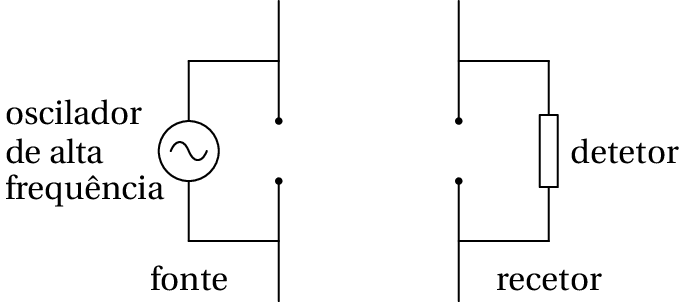
Considere uma onda eletromagnética plana,
polarizada na direção do eixo dos
, que se propaga no vácuo na
direção positiva do eixo dos
, com frequência de 12 MHz e amplitude
= 0.008 V/m. (a) calcule o período e o comprimento
de onda. (b) Escreva uma expressão para
e para
.
Uma onda eletromagnética plana propaga-se no vácuo
no sentido negativo do eixo dos
. Num dado instante
= 0 o campo
elétrico é
, com
em metros. (a) Calcule o comprimento de onda. (b) Calcule
a frequência. (c) Diga qual é a direção de polarização da onda.
Uma lâmina metálica muito extensa encontra-se
sobre o plano O
. A lâmina é ligada a uma fonte variável que produz
um campo elétrico uniforme no plano O
, mas variável no tempo segundo
a equação:
, onde
e
são constantes. O campo elétrico na lâmina
origina uma onda eletromagnética plana. Escreva as funções que
representam os campos elétrico e magnético dessa onda, em função do
tempo e da posição.
Usando a equação 12.17, demonstre que se
o campo elétrico for
, o campo magnético é
e se o campo elétrico for
, o campo magnético é
.
A figura representa o campo eletromagnético de uma
onda plana de 420 MHz, no instante
= 0. As linhas de campo verticais
representam o campo elétrico e as linhas perpendiculares à figura
são as linhas do campo magnético. Calcule a distância
e escreva o
vetor do campo magnético em função do tempo e da coordenada
.
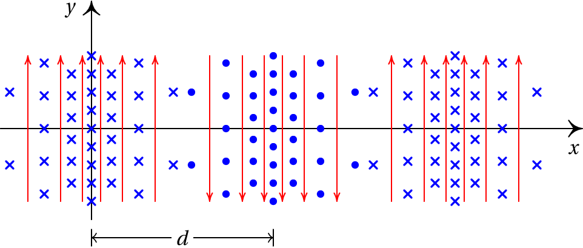
Calcule a energia, em joules e em eletrão-volts,
dos fotões na luz laranja, com comprimento de onda de 616 nm.
Determine o comprimento de onda de um fotão com
energia igual a 2.00 eV. A que tipo de radiação corresponde esse fotão?
Respostas
Perguntas:1. A. 2. D. 3. B. 4. D.
5. D.
Problemas
490 mV/m.
O campo elétrico na placa metálica é nulo, o que implica que as
ondas não passam de um lado para o outro. O recetor só deteta ondas
polarizadas na direção da linha entre as duas esferas no detetor; as
ondas produzidas pela fonte estão polarizadas na direção da linha entre
as duas esferas na fonte.
(a)
= 83.33 ns,
= 25 m
(b)
.
(a) 279 nm. (b) 1.074×1015 Hz. (c)
O eixo dos
As expressões dos campos são
A derivada de
em ordem a
é
. Substituindo na
equação 12.17 conclui-se que a derivada de
é função de
e igual a
. Como a derivada de
em ordem a
é
, então
é igual a
.
A derivada de
em ordem a
é
. Substituindo na
equação 12.17 conclui-se que a derivada de
em ordem a
é igual a
. Como a derivada de
em
ordem a
é
, então
é igual a
.
= 35.7 cm,
(
em segundos,
em metros)
3.23×10−19 J, 2.02 eV.
620 nm. Trata-se de luz visível de cor laranja-vermelha.

(clique para continuar)